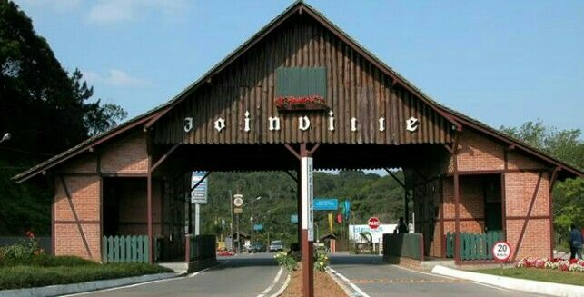

A ideia de um metrô em Joinville surge como uma alternativa futura para aliviar o crescimento do trânsito e o aumento da frota de veículos, superando a atual dependência do sistema de ônibus. Contudo, devido ao alto custo de construção e à dispersão urbana da cidade, opções mais práticas e baratas como faixas exclusivas, BRT ou bondes modernos são recomendadas para o curto prazo, seguindo o modelo bem-sucedido de Curitiba.
Portanto, o metrô deve ser considerado um plano estratégico de longo prazo. Para viabilizá-lo, Joinville precisa planejar seu crescimento urbano de forma organizada e integrar seus diferentes meios de transporte desde já.